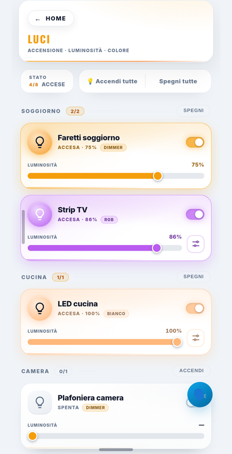
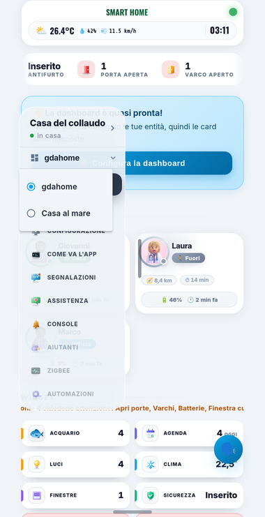
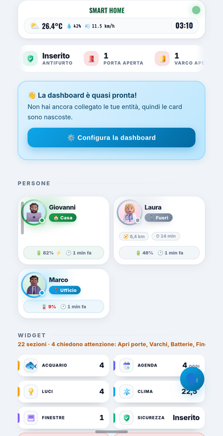
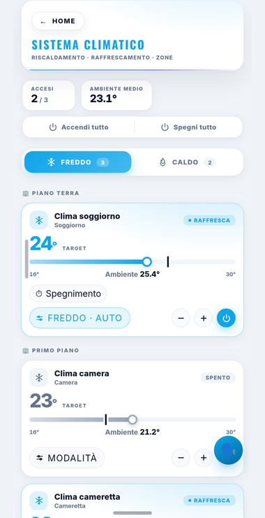
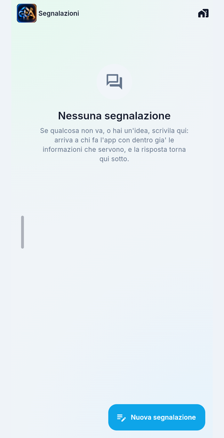

Otto lettere e basta
Niente indirizzo, niente credenziali di Home Assistant. Si inquadra un quadretto — o si battono otto lettere — e il telefono riceve un segno suo, che vale solo per quel ponte e per quella casa, e si stacca con un bottone.
Per Home Assistant
gdahome è l'app per Android e iPhone che fa vedere la casa come una plancia — quella vera, con le sue trenta sezioni — e che sa fare le tre cose che in Home Assistant stanno nascoste in fondo a un menu: abbinare un dispositivo Zigbee, scrivere un'automazione, creare un aiutante.
Ci si abbina inquadrando un quadretto: nessun indirizzo da battere, nessuna credenziale di Home Assistant.

Com'è
Le stanze, le luci col colore, il clima con le sue curve, le segnalazioni. Sono fotografie dell'app vera: quello che si vede qui è quello che si trova installandola.




Come ci si arriva
Non c'è nessuna porta da aprire sul router, nessun indirizzo pubblico da avere, nessuna VPN da installare. Il ponte apre lui un filo verso il centralino e lo tiene aperto, e i telefoni arrivano da quella parte.
Niente indirizzo, niente credenziali di Home Assistant. Si inquadra un quadretto — o si battono otto lettere — e il telefono riceve un segno suo, che vale solo per quel ponte e per quella casa, e si stacca con un bottone.
Il token del Supervisor non esce mai dal ponte: né la pagina né il telefono lo vedono mai. Un segno lungo incollato a mano vive anni e vale tutto; questo vale una casa, e si revoca.
Ogni casa col suo segno, e si passa dall'una all'altra dal menu. La casa dei genitori, quella al mare, quella di chi ti ha chiesto una mano: stesse app, stesso telefono.
Toccala: è viva
Qui sotto gira la plancia di gdahome: gli stessi file che stanno dentro l'add-on, non un disegno che gli somiglia. Le trenta voci della barra sono le sue, le tessere sono le sue, i ritratti delle persone sono i suoi. Accendi una luce e la vedi accendersi; apri una pagina e ci trovi quello che ci troveresti in casa.
Riempirla è la casa demo del collaudo — duecentotrentacinque entità, sette stanze, un fotovoltaico con la batteria, un'auto, una piscina: le stesse contro cui girano le prove del progetto.
La plancia non è arrivata su questo server.
Qui dentro gira la plancia per davvero, e in questa copia dei file manca. La si vede comunque: è la stessa che sta nelle fotografie qui sopra, ed è quella che l'app apre sul telefono.
Vai a come si prendeUna plancia vuole un Home Assistant dietro, e un sito non ce l'ha. Ma la plancia ha un gancio fatto apposta: se trova un WebSocket già messo nella pagina, usa quello invece di aprirne uno. È lo stesso gancio con cui l'app sul telefono le cuce addosso il proprio filo. Di qua dal gancio, qui, c'è una Home Assistant finta scritta in trecento righe.
Dall'altra parte non c'è nessuna casa: gli stati stanno in una mappa nella pagina. Premere un interruttore la cambia, e il cambiamento torna indietro come tornerebbe da Home Assistant — quindi la plancia si muove per davvero — ma non si accende niente da nessuna parte, e ricaricando la pagina torna tutto com'era.
Cosa c'è, e cosa no
L'app non riscrive la dashboard. Mostra quella vera, con le sue tessere, le sue finestre e la sua configurazione, in un riquadro dentro l'app. I file li ha l'add-on: in Home Assistant non serve installare nessuna integrazione.
Le tre funzioni nuove non esistono da nessuna parte, quindi scriverle native non costa un minuto in più. Le sezioni che esistono si mostrano in un riquadro; quelle nuove si scrivono da capo.
Dove sta
Dentro Home Assistant gdahome si installa oggi, dal negozio degli add-on. L'app invece è in prova chiusa, e va a chi la sta provando: sul Play Store per tutti fra due settimane, e su iPhone a seguire. Quello che farà lo si vede qui sopra — la plancia in questa pagina è la sua, e ci si può girare dentro.
Si chiama gdahome, e si installa dal negozio come qualunque altro add-on: Impostazioni → Add-on → Negozio → Archivi, si incolla l'indirizzo di questa repository, e nell'elenco compare. Da lì in poi si aggiorna da sé.
Come si installa →Serve solo per entrare da fuori casa, e non passa da nessuno: gira su una macchina di gdahome, la stessa di questo sito. Fa incontrare un telefono e la sua casa senza capire niente di quello che si dicono — quello che passa è già cifrato quando arriva, e lui non ha le chiavi.
Com'è fatto →In prova chiusa, e va a chi la sta provando. Sul Play Store per tutti fra due settimane.
Prossimamente. Il codice è lo stesso — è Flutter, una app sola per tutti e due i telefoni: quello che manca è la firma e la distribuzione, non l'app.
Il codice per intero, ed è pubblica: il ponte, il centralino, l'app, gli
strumenti, e le prove che ci girano sopra a ogni modifica.
Code → Download ZIP, o un git clone.